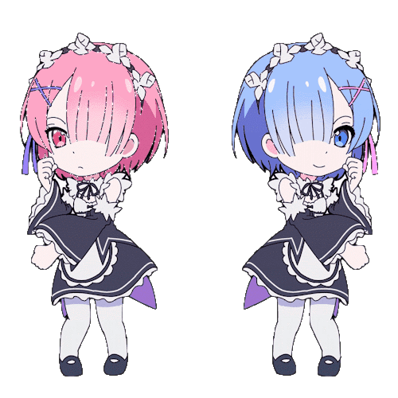
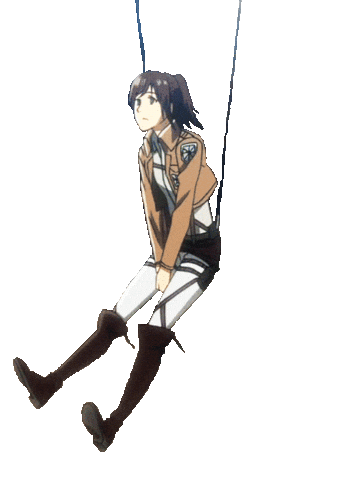
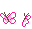
En esta sección encontraras los 10 animes que fueron nominados a la ANIME AWARD de Crunchyroll, aunque fueron bastantes nominaciones estas fueron las que más destacaron.
El anime me centra en un chico llamado izuku midoriya que no cuenta con un don en un mundo donde todos poseen uno, a medida que avanza la serie suceden eventos que hacen que el chico que antes no contaba con un don fuera uno de los grandes héroes y que acabara con el villano más grande y temible. En la categoría de mejor anime del año 2026 MHA se llevo dicho premio.
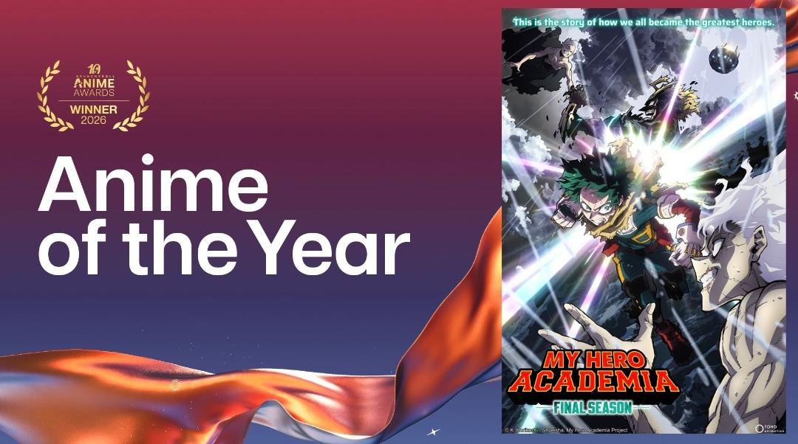
Una de las grandes peliculas del cine y de todo japón sin duda es está, que fue nominada a mejor película del año 2025 y que aún en la actualidad sigue subiendo de categoría.
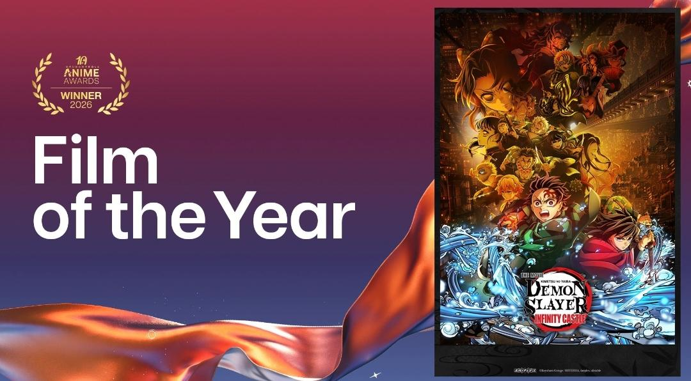
A pesar de que se hace poquito fue estrenado este anime, el nivel de popularidad fue alto, ya que el estilo del anime fue lo que llamo la atención del público y fue nominado a mejor anime del año 2026 a Mejor serie nueva.
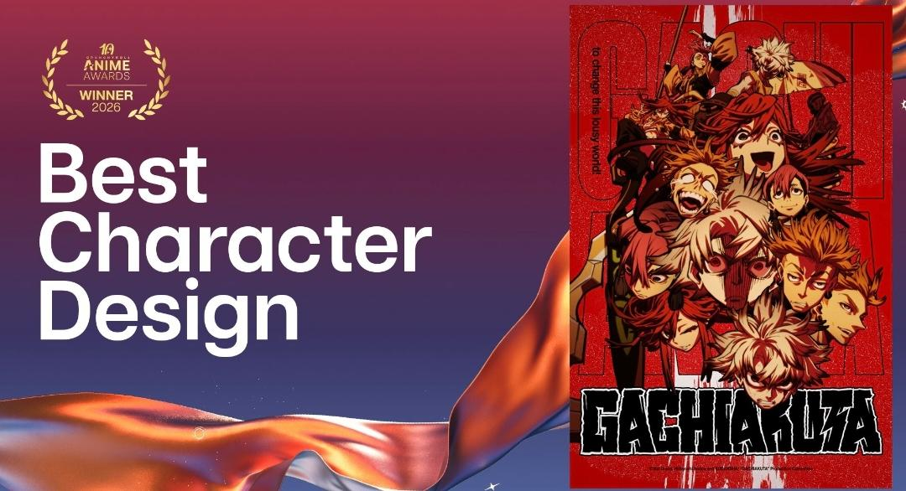
Es un anime japonés que sigue las aventuras de Monkey D. Luffy y su tripulación en busca del tesoro más grande del mundo, el One Piece. Esta fue nominada a mejor serie cursada de todo el año 2025-2026.
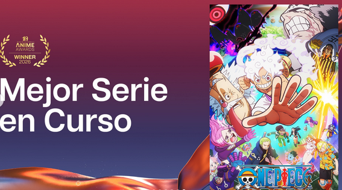
La segunda temporada de Solo Leveling continúa la historia del protagonista, quien se enfrenta a nuevos desafíos en el mundo de los niveles y fue nominada a mejor animación, aunque este anime se estreno 2025 la calificación de ser una de las mejores animaciones no baja al contrario esta subía y fue nominada a mejor serie de acción en 2026.
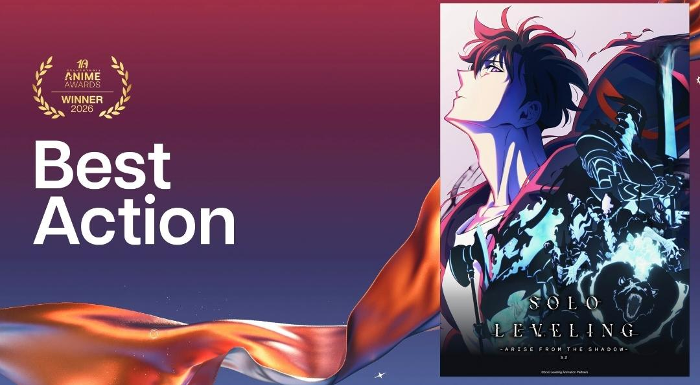
Esta a la mejor serie en el genero de romance, ya que seguimos la historia de rintaro y su amor por la protagonista, donde pasan muchos sucesos donde juntos lleban su amor a otro nivel. Esta fue nominada a mejor a la mejor serie en la categoría de romance.
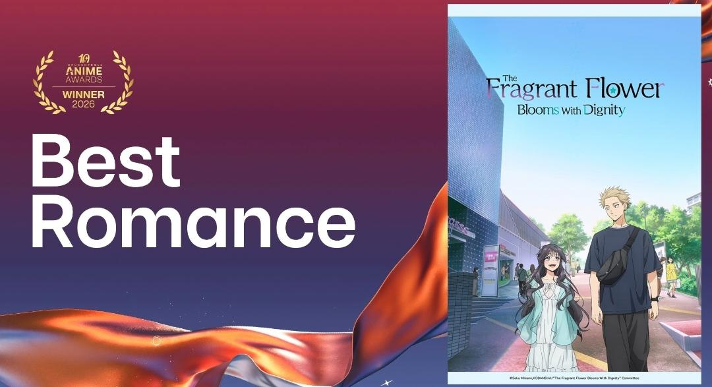
Este anime se centra en misterios y comedia, donde los protagonistan deberan enfrentar desafión para conseguir las dos bolas de oro de okarun, este anime fue mominado a mejor anime de comedia de su segunda temporada, aunque la primera también tiene el mismo nivel de entretenimiento los fans les gusto mas la segunda entrega.
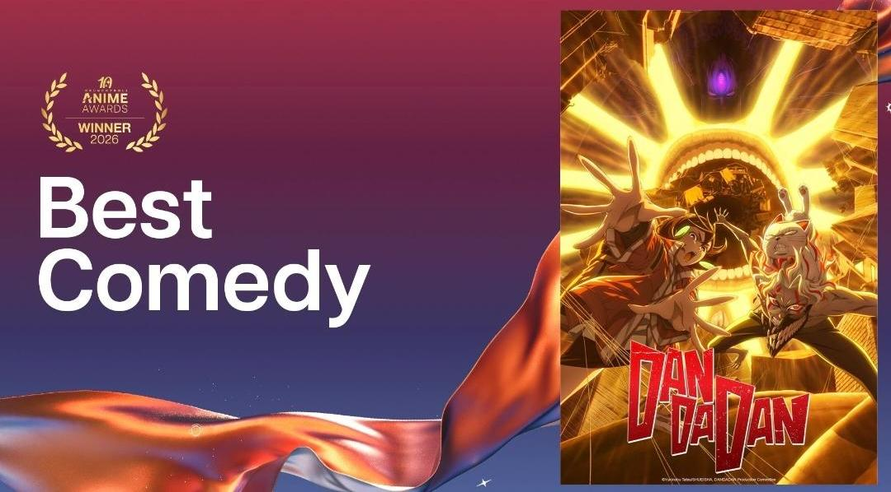
Este anime se centra en la historia de Maomao, una joven inteligente y astuta que trabaja como sirvienta en el palacio imperial. La serie sigue sus aventuras mientras resuelve misterios y enfrenta desafíos en un entorno lleno de intrigas políticas y sociales. Esta fue nominada a mejor anime de drama
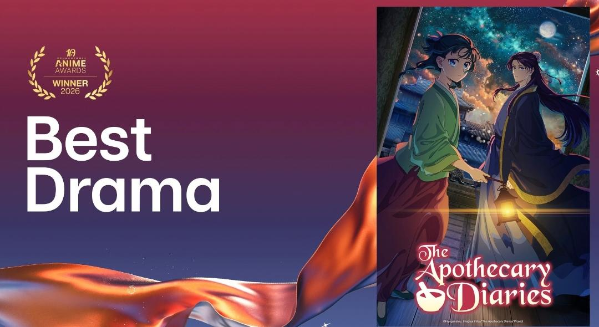
Esta serie de anime se centra en la historia de un joven llamado Lazarus, quien despierta en un mundo post-apocalíptico sin recuerdos de su pasado. A medida que explora este nuevo entorno, descubre que tiene habilidades especiales y se une a un grupo de sobrevivientes para enfrentar los peligros del mundo devastado. Esta fue nominada a mejor anime de ciencia ficción.
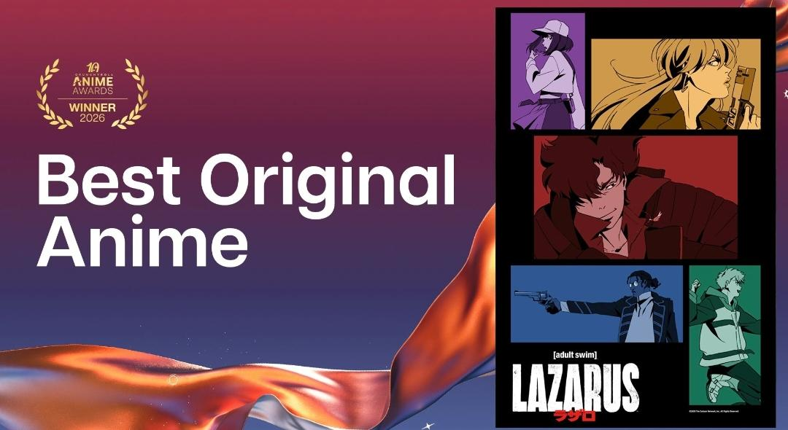
Aca tiene otra nominación que es de mejor anime con una gran animación 2026, con esto ya son dos nominaciones que alcanza el anime, demostrando que se pued ehacer un anime con una trama bien estructurada y una animación expectacular que atrae al espectador.
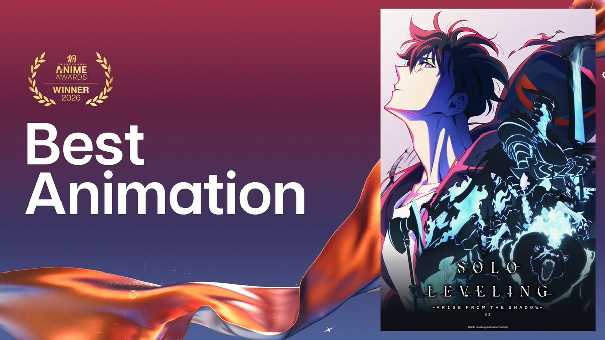
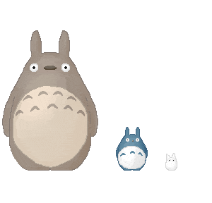
Volver a inicio